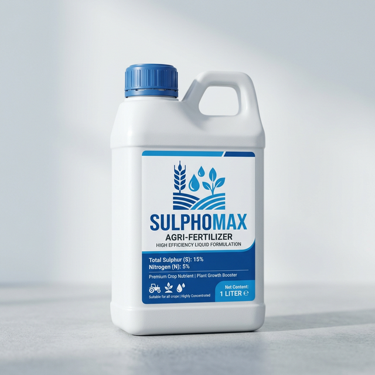
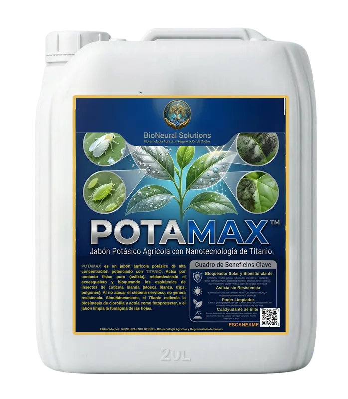
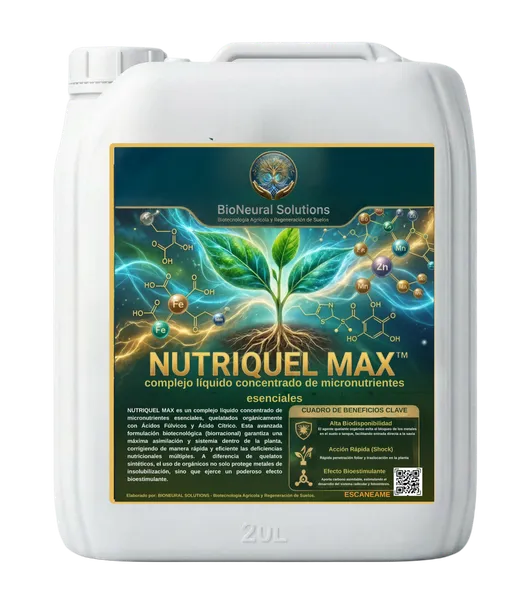
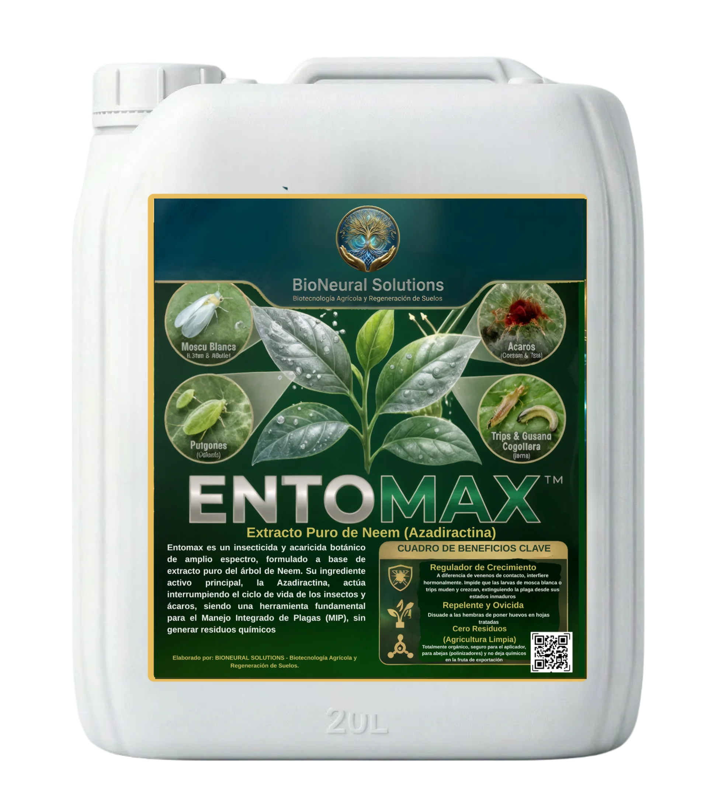

La revolución nace en
Nuestra BioFábrica.
Conectamos el conocimiento del campo con el poder de la Alta Precisión Botánica.
BioNeural Solutions integra el talento agronómico puro con biotecnología de vanguardia para entregar insumos cero residuos, 100% amigables con el productor y letales contra las plagas.
Corazón Agrícola,
Mente Tecnológica.
Desde nuestras avanzadas instalaciones en Fresno, Tolima (Corazón geográfico de Colombia en alianza con Asofrutos), BioNeural Solutions formula protocolos exactos de aspersión botánica que anulan la residualidad química.
Pureza Biorracional
Extractos meticulously formulados con biotecnología que garantiza 0% residualidad tóxica en cosechas de exportación.
Potencia Molecular
Mezclas hiper-concentradas probadas en laboratorio para superar el efecto de agroquímicos convencionales.
Proyección Global
Producción a escala industrial preparada para las exigencias técnicas más rigurosas del mercado internacional.
Nuestras Soluciones.

Sulphomax™
Caldo Sulfocálcico de alta solubilidad. Triple acción: Acaricida letal, Fungicida preventivo y Corrector nutricional.
Explorar Tecnología →
PotaMax
Detergente agrícola Potásico hiper-concentrado. Causa asfixia de membrana en minutos y lava mielilla negra.
Explorar Tecnología →
Nutriquel-Max™
Complejo quelatado multimineral de choque fisiológico. Absorción inmediata con anillos orgánicos y ácidos fúlvicos.
Explorar Tecnología →
EntoMax™
Extracto Botánico de Neem Puro. Biorregulador anti-ecdisona y repelente sistemático biológico. 0% Residualidad.
Explorar Tecnología →